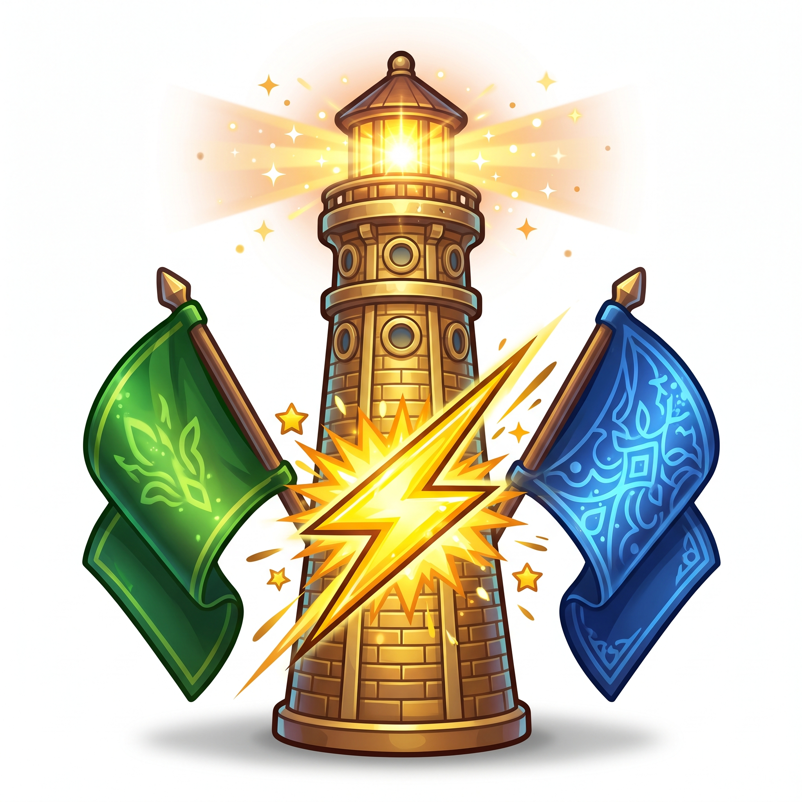

MODE 1 • SORTIR CEPAT
PERISAI KHALIFAH
Pasangkan gelar, kebijakan, dan jasa besar ke Perisai Khalifah yang tepat sebelum waktu habis!

MODE 2 • DUEL 2 PEMAIN (IFP)
MENARA PERADABAN
Layar terbelah dua! Adu cepat Tim Kufah vs Tim Madinah menyalakan puncak menara ilmu!
MODE 3 • ANALISIS & KRONOLOGI
EKSPEDISI SEJARAH
Uji pemahaman mendalam tentang sejarah, keteladanan, dan warisan Khulafaurrasyidin bagi dunia!